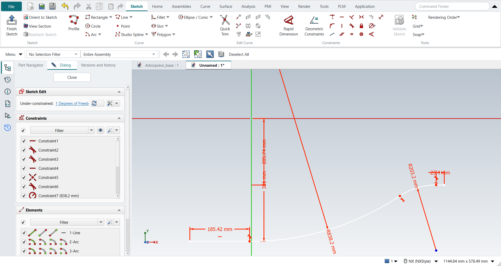
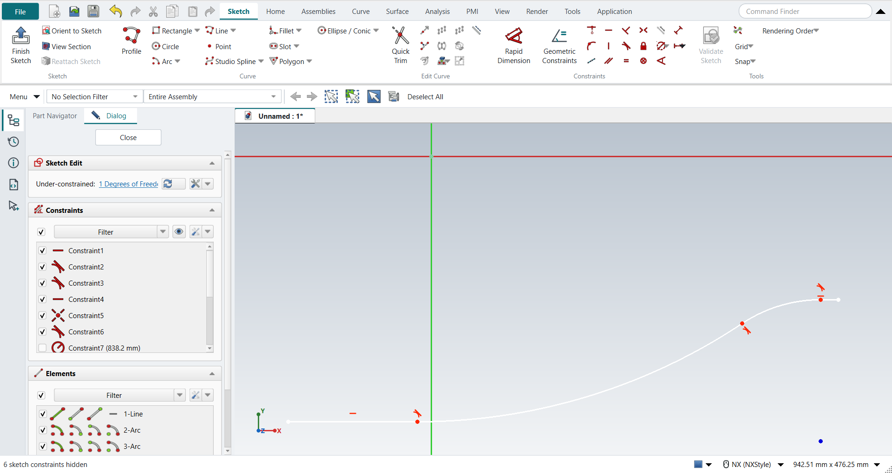
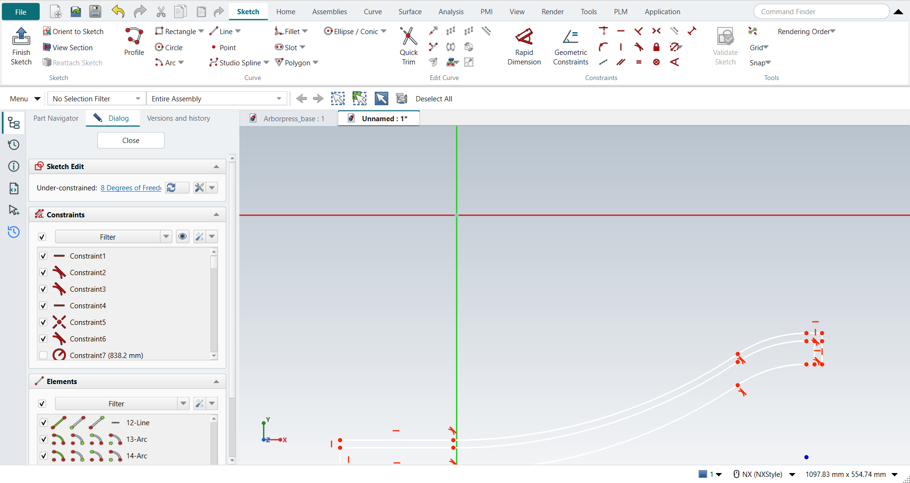

Tutorial AG: Impeller Lower Casing
| Source |
Ming C. Leu, Wenjin Tao, Amir Ghazanfari and Krishna Kolan, NX 12 for Engineering Design (Missouri University of Science and Technology), section 3.5.2. The book’s chapter 4.4 then revolves this sketch into the casing: tutorial AO. |
| You learn |
Profile with tangent arcs, a fixed point to dimension from, radius dimensions, Move Curve with Copy Original, joining curve ends with lines |
| Sizes |
the book’s, in inches, typed in millimetres. Line 1 is 15 below the origin and 7.3 long. Curve 1 has a radius of 33 and Curve 2 of 8. Line 2 is 8.1 below the origin and 1.0 long. The copies are 0.5 up (the wall), 1.5 down (the edge), and the flange is 0.5 wide. |
Step by step
1. A new part and a sketch
Ctrl+N. The book makes an inch part. NX-Style parts are metric, so the sizes are typed in millimetres (15 in = 381 mm). Click Sketch, pick the XC-YC plane and press MB2.
2. The inner curve
Press Z for Profile. Draw Line 1 below the origin, from left to right. Press M three times for a tangent arc and click Curve 1’s end. Press M three times again for the second tangent arc, Curve 2, which bends the other way. After an arc, FreeCAD starts with a tangent line, so it takes three presses again. Press M twice for a plain line (NX’s Line; FreeCAD would hold it tangent to the arc), click Line 2’s end and press MB2. Line 1 and Line 2 get Horizontal as they are drawn. Then click Tangent where it is missing, between Curve 2 and Line 2; the other joints are tangent already.
3. A point at the origin, and the dimensions
Click Point and click the origin. The point snaps to it, which fixes it there. In NX you type the point’s coordinates and click Fixed. FreeCAD’s Fixed keeps a point where it already is.
Dimension from the point: Line 1 15 below it and Line 2 8.1 below it (Distance), Curve 1 radius 33 and Curve 2 radius 8 (Radius / Diameter), Line 1 7.3 long and Line 2 1.0 long. One degree of freedom is left: nothing places the curve along X. The book leaves it too, because the casing is later revolved about the X axis.

Select the dimensions, then MB3 > Hide (or Ctrl+B).

4. Move Curve: the wall, the edge and the flange
Select the four curves and click Move Curve. Set Copies to 1 so that the curves are copied, not moved (NX: Copy Original). Click a base point, then type the move in the fields beside the pointer: length 12.7 mm, angle 90°. Join the two ends with lines (L). That closes the casing wall.
Copy the four curves again, 38.1 mm at -90° (1.5 in down), and join their ends to the inner curve. That is the edge, which the next chapter extrudes.
At the small end, copy the edge’s end line 12.7 mm at 180° (0.5 in along -XC), and join the two lines at the top and the bottom. That is the flange. The sketch now has 19 curves.

Ctrl+Q, and save with Ctrl+S.
The replay
| # | In the book (NX) | In FreeCAD NX-Style | Result | Notes |
|---|---|---|---|---|
AG1 |
Create a new file in inches (Impeller_lower_casing) |
Ctrl+N, Model template |
same |
new document ['Unnamed'] |
AG2 |
Units in the New dialog (the book picks inches) |
metric part kept; book sizes typed in mm |
differs |
FreeCAD sets units in Preferences, not in the New dialog; NXStyle defaults to millimetres (document: Standard (mm, kg, s, °); 25.4 mm shows as 25.40 mm) |
AG3 |
Sketch in Task Environment on the XC-YC plane |
ribbon 'Home › Direct Sketch > Sketch', plane row + MB2 |
same |
picked XY-plane (Base plane); FreeCAD edits every sketch in its own environment, as NX’s task environment |
AG4 |
Profile: Line 1, Curve 1, Curve 2, Line 2 |
Z key, 5 MB1 clicks, M (3x) before Curve 1’s end, 3x before Curve 2’s and 2x before Line 2’s (NX’s Line), MB2 |
same |
curves ['line', 'arc', 'arc', 'line']; tangent joints 2 (Line 1-Curve 1, Curve 1-Curve 2; Line 2 is drawn as a plain line); Horizontal on Line 1 True, on Line 2 True; tool ended by MB2 True; DoF 8 |
AG5 |
A point at the origin (0, 0, 0), then Fixed |
ribbon 'Sketch › Curve > Point', MB1 at the origin |
differs |
point at (0.0000, 0.0000) mm; the click snapped to the origin; DoF 8. FreeCAD’s Fixed keeps a point where it is, so Coincident with the origin puts it at (0, 0, 0), as NX’s typed coordinates do |
AG6 |
Tangent at every curve-line and curve-curve joint |
ribbon 'Tangent' where missing |
same |
made by Profile; added ['3-4 (0)'] |
AG7 |
Dimensions: p1 15, p2 7.3, R 33, R 8, p6 8.1, p4 1.0 |
picks + ribbon 'Sketch › Constraints > Distance' and 'Radius / Diameter', each value typed in FreeCAD’s dimension dialog (biggest first) |
same |
Curve 1 radius 33, Line 1 15 below the origin, Line 2 8.1 below the origin, Curve 2 radius 8, Line 1 7.3 long, Line 2 1.0 long; DoF 1 ('Under-constrained: / 1 Degrees of Freedom'): only the position along X is left free, as in the book; the four curves match the book’s figure |
AG8 |
Select all the dimensions, MB3 > Hide |
dimensions selected, MB3 on empty space > Hide |
same |
6 of 6 dimensions hidden (FreeCAD’s 'virtual space'); the sketch’s own visibility untouched True; menu ['Toggle Driving/Reference Constraints', 'Toggle Constraints', 'Select Associated Geometry', 'Hide', 'Delete'] |
AG9 |
Move Curve: the 4 curves, Distance 0.5 along YC, Copy Original |
4 curves selected + ribbon 'Sketch › Edit Curve > Move Curve', base point, offset typed |
same |
4 copies made; largest error 5.2e-06 mm |
AG10 |
Join the end points at the two ends: the casing wall is closed |
L key, MB1 on each end point, MB2 (2 lines) |
same |
2 lines; 4 of 4 ends snapped to the curves |
AG11 |
Move Curve: the lower curve, -1.5 along YC, Copy Original |
4 curves selected + ribbon 'Sketch › Edit Curve > Move Curve', base point, offset typed |
same |
4 copies made; largest error 6.6e-05 mm |
AG12 |
Straight lines join it with the inside curve: a closed chain |
L key, MB1 on each end point, MB2 (2 lines) |
same |
2 lines; 4 of 4 ends snapped to the curves |
AG13 |
Move Curve: the outer end line, -0.5 along XC, Copy Original |
1 curves selected + ribbon 'Sketch › Edit Curve > Move Curve', base point, offset typed |
same |
1 copies made; largest error 5.6e-07 mm |
AG14 |
Straight lines join the two lines: the flange’s rectangle |
L key, MB1 on each end point, MB2 (2 lines) |
same |
2 lines; 4 of 4 ends snapped to the curves |
AG15 |
The sketch: 19 curves (the casing wall, its edge, the flange) |
compared with the book’s figure |
same |
19 curves; all 19 match the book; DoF 8 ('Under-constrained: / 8 Degrees of Freedom'): the copies keep no constraints, like NX’s non-associative copies. The next chapter revolves the wall and the flange about the X axis and extrudes the edge |
AG16 |
Finish Sketch |
Ctrl+Q |
same |
sketch edit ended True; the sketch is shown True (its dimensions stay hidden) |
AG17 |
Save and close the file |
file name given once by script (the system file dialog is not driven); a change, then the Ctrl+S key |
same |
Impeller_lower_casing.FCStd rewritten by Ctrl+S: the file holds the change and the part is unmodified afterwards (modified before the key: True); FreeCAD format, not .prt |
| Result | Means |
|---|---|
same |
The book’s NX steps work as written. |
differs |
It works, but the FreeCAD way is different; the notes say how. |
limit |
The book’s way fails in FreeCAD itself; a workaround follows in the next steps. |
missing |
FreeCAD has no such function; a stand-in follows. |
skipped |
Not replayed; the notes give the reason. |
FAILED |
Did not work. |
Each of the 19 curves is compared with the book’s figure, rebuilt from its dimensions.
What differs from NX
-
FreeCAD gives Move Curve’s distance as a length and an angle. NX takes a distance along a chosen vector.
-
Copies = 1 is NX’s Copy Original. With 0, FreeCAD moves the curves.
-
Hidden sketch dimensions go to FreeCAD’s "virtual space". Its constraint list still shows them; Show All (Ctrl+Shift+U) brings them back.